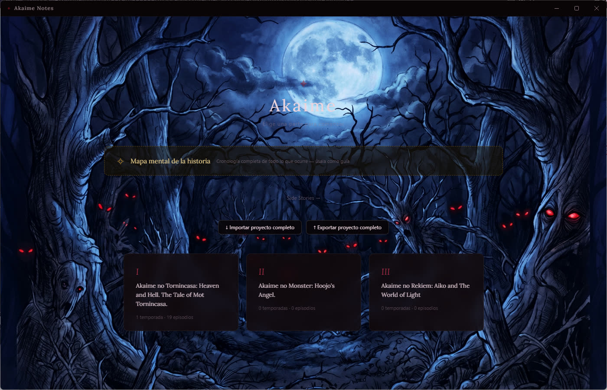

3D avatars & rigging
Modeling, UV mapping, texturing, rigging and skinning in Blender and Unity.
I started working with 3D models when I was fourteen. For the first four to five years I made content for Second Life and Sansar, and I still run a store on each. Today I specialize in avatars for VRChat: full rigs, hands and eye tracking, visemes, custom expressions and removable parts.
- Since 2017Selling on Second Life Marketplace
- 139 listingsin my Second Life store
- 5 / 5on CGTrader, Polygon Expert level
- 5+ yearsof avatar work across platforms
Second Life Marketplace
GaboKar-Store: complete mesh avatars with rigs and Bento hands and face.
Open store →- Blender
- Unity 3D
- Rigging & skinning
- UV mapping
- Texturing (PBR)
- Low-poly modeling
- VRChat avatars
- Second Life mesh
Akaime Notes
A desktop writing app I built for my own novel.
I am writing a novel in three parts, and I built my own app to write it in. Akaime Notes is a Windows desktop app made with Electron, React and TipTap. It has had nine releases so far.

Story mind map
A chronological map of everything that happens in the story, used as a guide while writing.
Parts, seasons, episodes
The novel is organized the way it is published, with per-episode outlines and word-count progress.
Independent side stories
Side stories are their own entities with their own grid and workspace, not nested under a part.
Focus mode
A fullscreen, distraction-free writing view with a configurable column.
Safe sync across two PCs
Live reload and a save-conflict guard, so notes synced through cloud storage never overwrite each other.
Export & import
Full-project and per-part export to Markdown and back.
About
I am Gabriel, a 3D artist from Venezuela. I have been working on 3D models since I was fourteen, and I now split my time between avatar work and my own projects. The Creator-in-Residence program would let me put much more time into both.
Most of my 3D work was published under the name Gabokar, which is why the links above use it.